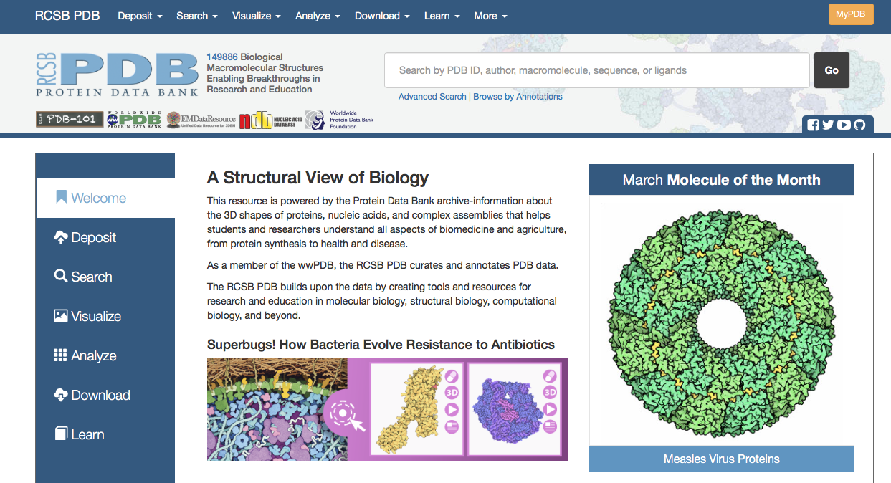
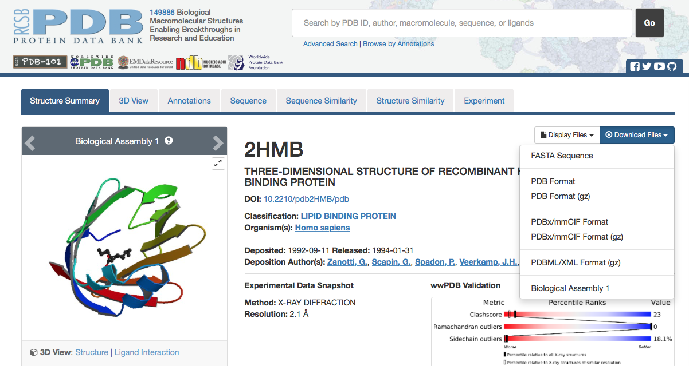
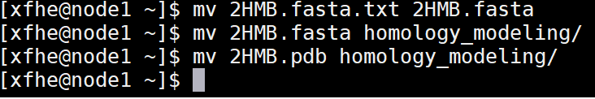
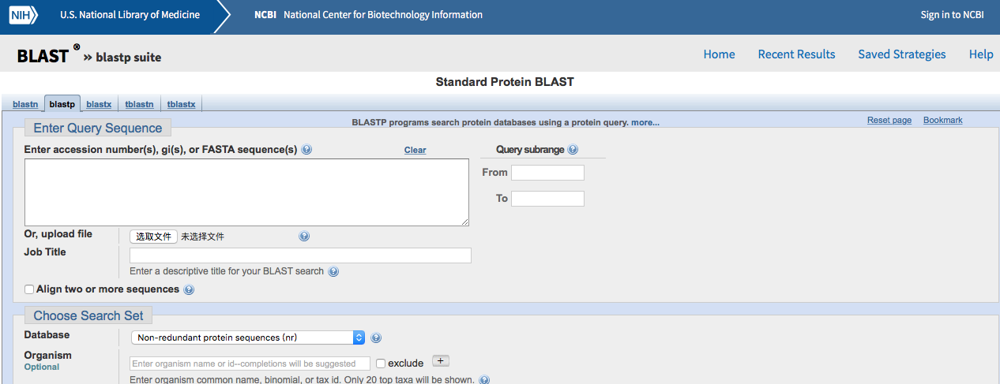
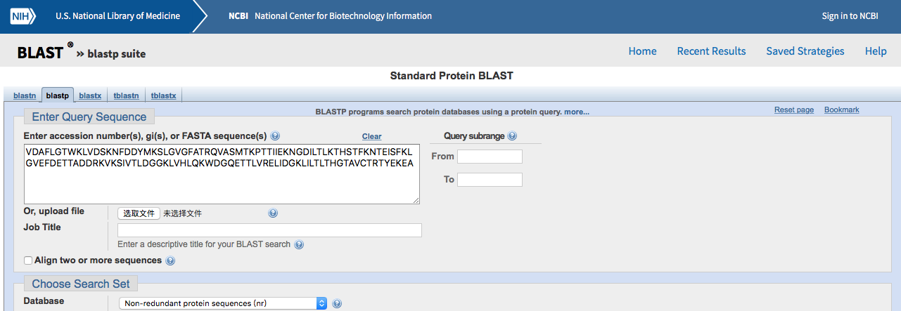
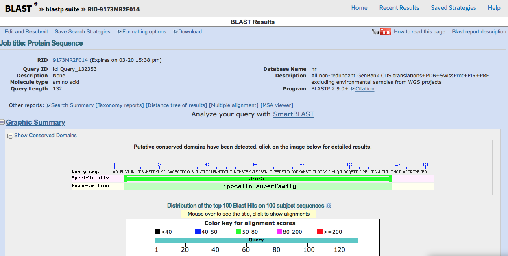
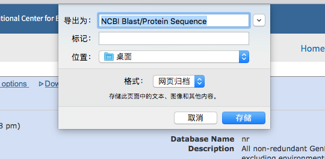
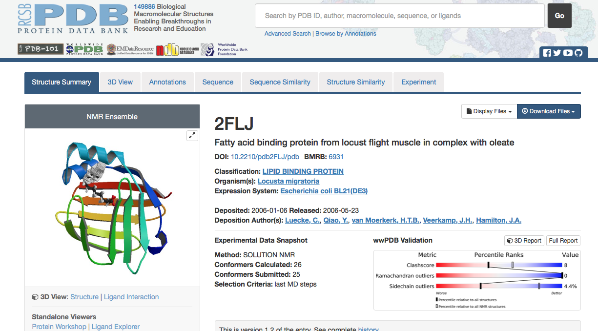
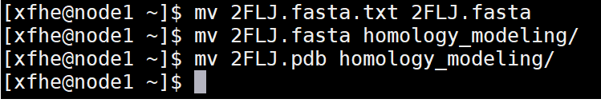

Homology modeling is a technique used to approximate the 3D structure of a protein when no experimentally determined structure exists. It operates under the principle that protein tertiary structure is better conserved than amino acid sequence, and proteins that share high sequence homology should therefore also share high structural homology. The protein being modeled is called the target protein. A protein for which there is an experimentally determined structure that is used to model the target is called a template protein. Template proteins must share high sequence homology with the target protein, so that their 3D structures can be expected to be very similar. The amino acid sequence of the target protein is mapped onto the 3D structure of the template to create an approximate model. This is a homology model.
It is important to organize where files are stored at each step in the project process in order to reduce clutter and prevent accidental overwriting. For this purpose, we will create separate directories for each part of the project. open a terminal window and use the mkdir command to make the following directories, avoid using spaces in file name, and note that all file names are care sensitive
$ mkdir homology_modeling
$ mkdir md_simulations
$ mkdir hm_analysis
The target protein for this semester is Fatty Acid Binding Protein(FABP),which has PDB ID #2HMB,everyone will be modeling this protein.
|  | 1. Go to the RCSB protein Data Bank website and search for PDB ID #2HMB. |
|  | 2. From left menu,download FASTA sequence and PDB text file. |
|  | 3. Change the name of FASTA sequence file to have .fasts as its extention and save this and the PDB file to your homology_modeling directory. $ mv 2HMB.fasta.txt 2HMB.fasta $ mv 2HMB.fasts homology_modeling $ mv 2HMB.pdb homology_modeling |
Everyone will choose a different template protein to use in modeling FABP.Potential templates can be identified by performing a BLAST search on the target protein to produce a scored list of proteins with highly similar sequences.
|  | 1. Go to the NCBI BLAST website and click protein blast. |
2. Open your target FASTA sequence in the vi editor.Highlight and copy $ vi 2HMB.fasta |
|
|  | 3. Paste your target FASTA sequence into the BLAST search field.Select Protein Data Bank proteins(pdb)for thedatabase and make sure blastp (protein-protein BLAST)is selected as the algorithm. Click the BLAST buttom at the bottom to begin your search. |
|  | 4. This results page displays information about the top alignment hits to the primary sequence you submitted. A graph shows the distribution of BLAST scores beginning with those hits that scored 200 points or higher. Mouse-over each bar to see which protein it corresponds to and click it to be taken to the protein's entry in the scored list further down the page. Hits that scored above 200 will likely include other Fatty Acid Binding Proteins, mutants, and analogs from different species. Those that scored from 80-200 will reveal more protein diversity. A second scored list containing detailed alignment information for each hit can be found at the bottom of the page. Be sure to note what dictates a positive result and how the identities, positives, and gaps are assigned percentages. Understanding how the BLAST program scores results (similar sequences) will be important for discussing the percent similarity of your template to your target. |
|  | 5. After you have examined the results page, choose a protein from the list to serve as your template. A higher BLAST score means a better template, but we will choose from the intermediate range of 50-100 in order to test the limits of homology modeling. Report your protein choice to the TA to confirm that everyone is assigned a unique template. Save the BLAST results page for your records. |
Repeat the steps for acquiring target protein files to get template protein files. PDB ID# 2FLJ is used as an example in this tutorial.
|  | 1. return to the RCSB Protein Data Bank website and search for the PDB ID # of your template. |
| 2. As before,download FASTA sequence and PDB text file. | |
|  | 3. Also change this FASTA sequence to have a .fasta extention and save this and PDB file to your homology modeling directory .
|